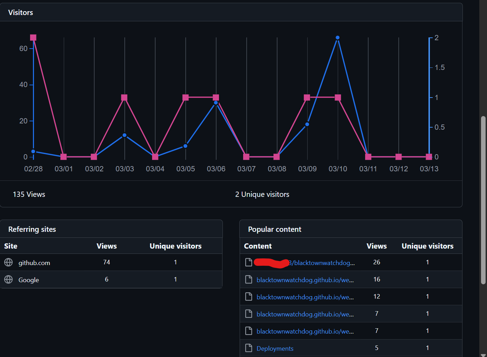

This website is hosted using GitHub Pages, a service provided by GitHub, Inc. As a hosting provider, GitHub may collect certain information from visitors to this site.

When you visit this website, GitHub may automatically collect and store the following information:
This data is collected for security purposes and to analyze site traffic. For more details, please refer to GitHub's Privacy Statement.
We do not use any third-party analytics services that collect additional data about your browsing behavior on this site.
As a visitor, you have rights regarding your personal data, including the right to access, correct, or delete information collected about you. To exercise these rights concerning data collected by GitHub, please consult GitHub's Privacy Statement.

Blacktown Watchdog collects data via Google Forms from the feedback and contact forms.
This data is provided by the user and is used to improve our website.
We automatically delete any data that is no longer needed. Users have the right to contact us if they have any concerns about their data and would like it deleted.